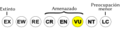
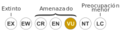

Archivo:Status iucn3.1 VU es.svg
De WikiEVA

Tamaño de esta previsualización: 200 × 50 píxeles. Otra resolución: 320 × 80 píxeles.
{kind=link}
{kind=link}
Archivo original (archivo SVG, nominalmente 200 × 50 píxeles, tamaño de archivo: 27 KB)
Historial del archivo
Haz clic sobre una fecha/hora para ver el archivo a esa fecha.
| Fecha y hora | Miniatura | Dimensiones | Usuario | Comentario | |
|---|---|---|---|---|---|
| actual | 01:06 19 oct 2012 |  | 200 × 50 (27 KB) | Marco Gaiani (Discusión | contribuciones) | |
| 23:02 7 jun 2012 |  | 240 × 64 (20 KB) | Marco Gaiani (Discusión | contribuciones) |
{kind=link}
- No puedes sobrescribir este archivo.
Usos del archivo
Hay más de 100 páginas que enlazan con este archivo. La lista siguiente sólo muestra las primeras 100 páginas que enlazan con este archivo. También puedes consultar la lista completa.
- Aburria aburri
- Acropora cervicornis
- Acropora palmata
- Aepeomys reigi
- Ameiva provitaae
- Anadia blakei
- Anadia pariaensis
- Ancistrus galani
- Anolis euskalerriari
- Anomaloglossus murisipanensis
- Anoura luismanueli
- Atractus matthewi
- Atractus turikensis
- Atya dressleri
- Austrofundulus guajira
- Austrofundulus leohoignei
- Batrachemys zuliae
- Batrochoglanis mathisoni
- Bolitoglossa orestes
- Bryconamericus charalae
- Caenolestes fuliginosus
- Campephilus pollens
- Carcharhinus limbatus
- Cardisoma guanhumi
- Chaceus caecus
- Chaceus turikensis
- Chaetostoma guairense
- Chauna chavaria
- Chibchanomys trichotis
- Cittarium pica
- Cryptotis meridensis
- Cryptotis tamensis
- Cuniculus taczanowskii
- Cypraea mus
- Diaphanos huberi
- Euryrhynchus pemoni
- Euspondylus monsfumus
- Grallaria excelsa
- Harpia harpyja
- Hemispingus goeringi
- Ichthyomys pittieri
- Inia geoffrensis
- Leopardus pardalis
- Leopardus tigrinus
- Leopardus wiedii
- Leptonycteris curasoae
- Lontra longicaudis
- Macrobrachium pumilum
- Mazama bricenii
- Megaptera novaeangliae
- Merganetta armata
- Metallura iracunda
- Moenkhausia pittieri
- Morphnus guianensis
- Myersiohyla aromatica
- Mylossoma acanthogaster
- Myrmecophaga tridactyla
- Nasuella meridensis
- Neotropospeonella decui
- Neusticomys mussoi
- Nyctinomops aurispinosus
- Odontophorus atrifrons
- Olallamys edax
- Oreophrynella huberi
- Oreophrynella nigra
- Oreophrynella quelchii
- Oreophrynella vasquezi
- Panthera onca
- Panulirus argus
- Paranocticola venezuelana
- Patagioenas squamosa
- Peltocephalus dumerilianus
- Philogenia polyxena
- Phyllogomphoides brunneus
- Physeter catodon
- Pionopsitta pyrilia
- Platysilurus malarmo
- Podocnemis unifilis
- Potamorhina laticeps
- Premnoplex tatei
- Prionace glauca
- Pristimantis pruinatus
- Rachovia hummelincki
- Rineloricaria rupestre
- Sarkidiornis melanotos
- Schizoeaca perijana
- Sorubim cuspicaudus
- Sorubimichthys planiceps
- Sotalia guianensis
- Speothos venaticus
- Stefania breweri
- Stefania riveroi
- Stefania satelles
- Strombus gigas
- Sturnira aratathomasi
- Sympetrum evanescens
- Tapirus terrestris
- Thripophaga cherriei
- Thyroptera lavali
- Trichomycterus spelaeus
{kind=link}
{kind=link}
{kind=link}
{kind=link}
{kind=link}
{kind=link}
{kind=link}
{kind=link}